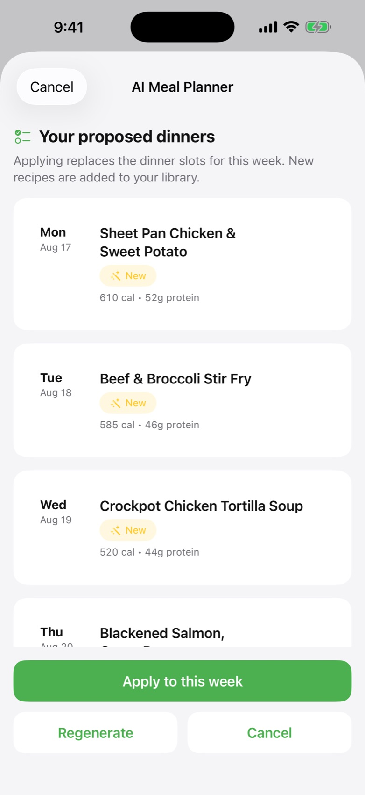
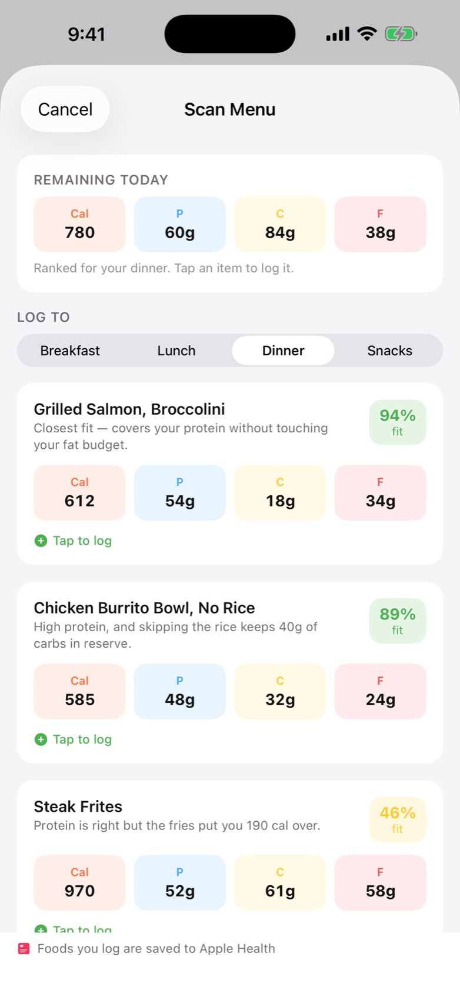

Preplate is a meal planner for people who actually track. Set your targets, fill the week, and the grocery list writes itself. Now with AI meal planning and photo logging.


What is Preplate? Preplate is a free iOS meal-planning app from Cooper Industries for people who track calories and macros. It combines a weekly meal planner, a macro tracker with photo and barcode logging, a recipe library, and a grocery list that generates itself from your plan and sorts by store aisle. Premium adds AI planning and costs $2.99/month or $14.99/year.
Most meal planners stop at the recipe. Preplate carries your targets all the way through to the checkout lane.
"Four dinners, high protein, chicken twice, nothing over 40 minutes." The AI planner builds the week around your targets and drops it straight into your calendar. Regenerate until it's right, then apply.
Log by search or barcode, photograph your plate, or scan a restaurant menu and Preplate tells you which dishes fit the macros you have left today. Or just type "two eggs and toast."
Every recipe on the week becomes a shopping list automatically: quantities scaled to your servings, duplicates merged, recurring staples added, everything sorted by aisle. At Kroger-family stores it follows the real physical aisle order of your store.
If any of these sound like you, Preplate was built around your week.
The details that make a planner stick.
The planner, tracker and shopping list are free. Premium removes ads and unlocks the AI and power features.
Subscriptions renew automatically until canceled in Settings › Apple Account › Subscriptions. Payment is charged to your Apple Account at confirmation of purchase. See the Terms of Use and Privacy Policy.
Yes. The weekly meal planner, macro tracking, search and barcode logging, recipe library and auto-generated shopping list are free, supported by banner ads. Premium removes ads and unlocks the AI features, photo and menu logging, store-aisle shopping, household sharing and more for $2.99 a month or $14.99 a year, with a one-week free trial.
Calories, protein, carbohydrates, fat, fiber and sodium, each against a daily target you set. Logged nutrition can also be written to Apple Health.
Preplate reads every recipe on your weekly plan, scales quantities to your servings, merges duplicate ingredients, adds your recurring staples, and sorts the result by aisle. At Kroger-family stores it can follow the real physical aisle order of your store.
Yes. Preplate writes logged nutrition to Apple Health and can optionally read steps, active energy and body weight.
Yes. With Premium you can photograph a plate, snap a restaurant menu to see which dishes fit the macros you have left, or simply describe what you ate in plain words.
On your device and, if enabled, in your own iCloud account. Preplate runs no servers of its own and never receives your data. Optional features such as AI planning send only the information needed for that request to the provider. Details are in the privacy policy.
Yes. Premium household sharing syncs your plan, recipes and shopping list with the people you cook for through iCloud.
Subscriptions are managed by Apple. Open iOS Settings, tap your name, then Subscriptions, and cancel Preplate Premium. You keep Premium until the end of the current period.
Free on the App Store. Premium is a week free to try.
Download on theApp Store